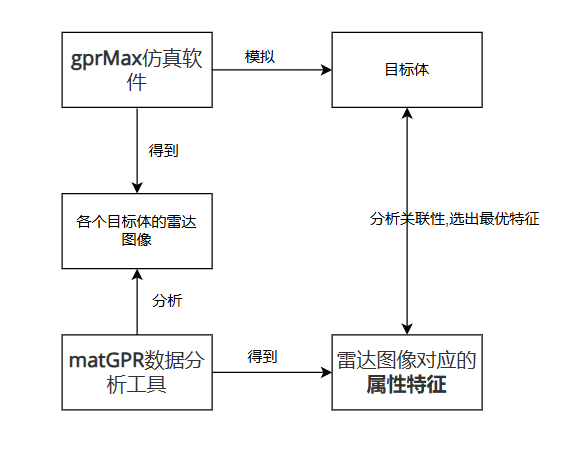
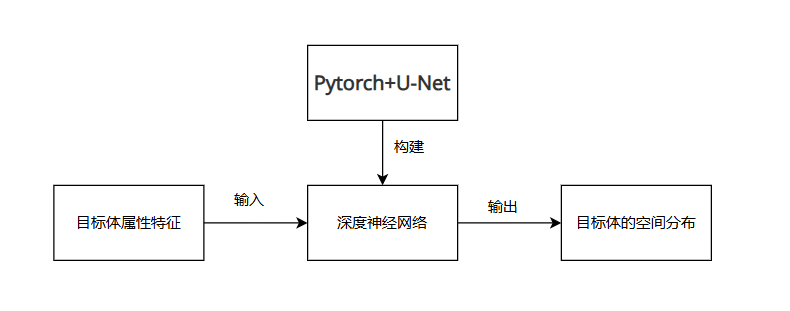

基于探地雷达信号属性特征的目标体智能识别研究
什么是探地雷达？
探地雷达(GPR，Ground Penetrating Radar)是通过发射高频电磁脉冲波，利用地下介质电磁性质的差异，根据回波的振幅、波形和频率等运动学和动力学特征来分析和推断介质结构和物性特征。探地雷达技术在过去的时间里，在理论、技术和应用领域方面，都取得了极大进展，已经成为一种高分辨的无损探测技术。
探底雷达的原理
通过发射天线向地下发射高频电磁波，通过接收天线接收反射回地面的电磁波，电磁波在地下介质中传播时遇到存在电性差异的界面时发生反射，根据接收到电磁波的波形、振幅强度和时间的变化特征推断地下介质的空间位置、结构、形态和埋藏深度。
探地雷达可以用来干什么
探地雷达可用于检测各种材料，如岩石、泥土、砾石，以及人造材料如混凝土、砖、沥青等的组成。
探地雷达可确定金属或非金属管道、下水道、缆线、缆线管道、孔洞、基础层、混凝土中的钢筋及其它地下埋件的位置。
它还可检测不同岩层的深度和厚度，并常用于地面作业开工前对地面作一个广泛的调查。
如何使用探地雷达识别目标体
分析传统雷达图像
传统GPR图像[比如A扫描，B扫描]的解读通常依赖于操作人员的经验和专业知识，这可能会限制其精度和准确性。GPR生成的图像通常是基于反射电磁波的时间延迟和强度，形成地下结构的二维或三维表示。分析雷达信号
探地雷达信号中包含了大量可描述的、定量化的属性特征，这些属性特征可用于刻画地下目标体的结构与物性等信息。属性分析的结果能够增强目的层视觉效应，恰当的雷达属性既能对直接期望的近地表目标体敏感，同时也能反映埋藏环境的特征或性质。地震属性的理论
传统的探地雷达数据解译基于反射特征的主观判断，这种判断更多的是依靠于解释人员的技术和经验。借鉴于地震属性的理论，探地雷达属性是从雷达记录中提取的关于电磁波的几何学、运动学、动力学及统计学特征，通过提取
可描述的、定量化的属性特征，可用于刻画地下目标体的结构与物性等信息。
相关研究
- young等(1997)第一次直接把地震属性的概念应用在三维探地雷达数据中，基于一致性分析对地层进行了精细的刻画。
- Rea和Knight(1998)应用统计学特征对探地雷达信号进行了处理，有助于建立雷达图像和地下介质的对应关系。
- Lemke等(2000)综合利用了瞬时频率、瞬时振幅、瞬时相位来确定地下介质的电性能参数
总结：上述研究以属性的角度入手对雷达数据进行分析，但属性特征的解译仍依赖于人工经验，要们要做的就是把这个解译的工作自动化。
项目目标
深度学习自2012年在ImageNet获得图像分类比赛的冠军后，迎来了一轮新的发展与深化。特别地，在图像与视觉相关的工程领域，由于数据积累和计算算力的条件具备，大量的深度学习算法得以提出。研究学者也将深度学习技术应用于探地雷达的智能识别和电性能参数反演中（Hou等，2021； Liu等，2021），但网络的输入主要以雷达图像为主，未能考虑探地雷达属性这一可反映地下目标体结构与物性信息的重要特征。因此，本课题将探地雷达属性作为特征输入至深度神经网络，可展现出高精度识别目标体的潜力。
以探地雷达信号的属性特征分析为切入点，通过对探地雷达信号的三瞬属性、相干属性、纹理属性、曲率属性等特征进行深入分析，构建了一种可将探地雷达信号属性映射到目标体空间分布的端到端深度神经网络，从而实现目标体的快速、智能化识别。
项目研究内容
探地雷达信号的属性特征分析
通过对
探地雷达信号的属性特征进行深入分析，包括三瞬属性、相干属性、纹理属性、曲率属性等，为后续深度神经网络的构建提供指导依据。深度神经网络的构建及训练
在对探地雷达信号的属性特征进行深入分析的基础上，构建一种可将探地雷达信号属性映射到目标体空间分布的端到端深度神经网络，从而实现目标体的快速、智能化识别。
项目实施方案
探地雷达信号的属性特征分析
基于gprMax仿真软件构建不同场景下各种目标体的雷达图像，并利用matGPR数据分析工具得到雷达图像对应的属性特征；在此基础上，分析各种属性特征与目标体之间的关联性，优选出最优特征。
直接从
.out文件出发来提取探地雷达信号的属性特征也确实是一个很好的策略，因为它允许你充分利用模拟数据的所有信息，并针对你的研究需求进行定制化处理。不过，这也要求你具备一定的编程技能，以便正确解析.out文件并实现高效的特征提取流程。深度神经网络的构建及训练
基于Pytorch深度学习框架，拟选用U-Net作为网络架构原型，并将前述的属性特征作为输入、目标体空间分布作为输出对网络进行训练和调优。
 
工作进度
2024.10.01-2024.12.31 基于gprMax仿真软件和matGPR数据分析工具，开展探地雷达属性特征的分析；
2025.01.01-2025.03.31 基于Pytorch深度学习框架，构建可实现目标体识别的深度神经网络；
2025.04.01-2025.05.31 基于测试集对训练的深度神经网络模型进行调优，最终完成研究报告并答辩。